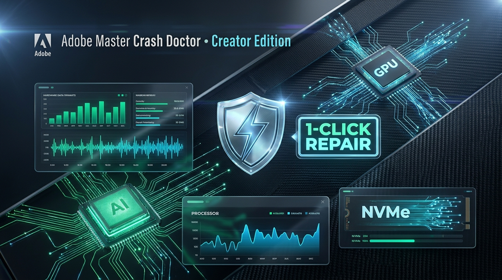
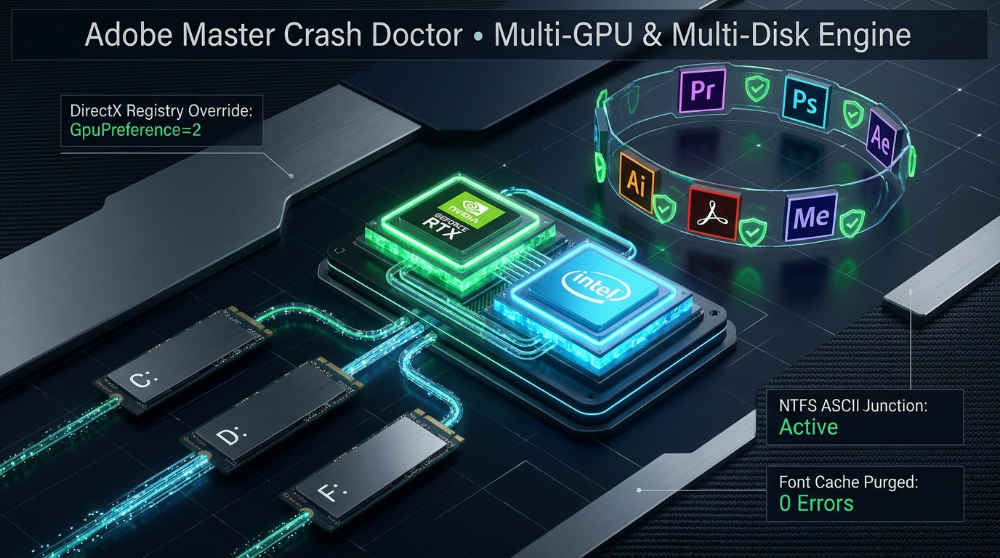

Αυτόνομη σουίτα διάγνωσης, hardware τηλεμετρίας multi-GPU και αυτόματης αποκατάστασης. Επιλύει οριστικά το RuntimeInstaller.DLL (0xc0000005), το πάγωμα 2 λεπτών του Premiere Pro, και τις συγκρούσεις δικαιωμάτων σε οποιοδήποτε δίσκο και υπολογιστή.

Καμία γενική συμβουλή. Το Crash Doctor επεμβαίνει στα ακριβή σημεία αποτυχίας των Windows και του Adobe Framework.
Οριστική αντιμετώπιση του διάσημου Access Violation crash στο offset 0x000000000010de13 κατά την εκκίνηση του Premiere Pro.
Εξάλειψη του μυστηριώδους παγώματος ακριβώς 2 λεπτά μετά την αναπαραγωγή ή εισαγωγή MKV/MP4 timeline αρχείων.
Συστήματα με επεξεργαστές Intel Ultra / Core i7 και dedicated κάρτες NVIDIA RTX συχνά συγκρούονται στο GPUSniffer.
Αυτόματη ανίχνευση εφαρμογών σε οποιονδήποτε δίσκο (π.χ. D:\Adobe Suite1) και παράκαμψη ελληνικών/Unicode φακέλων.
Μείνετε πάντα στην τελευταία έκδοση απευθείας μέσα από την εφαρμογή χωρίς να κατεβάζετε χειροκίνητα νέα installers.
Βαθύς καθαρισμός και διαγραφή όλων των κρυφών service daemons της Adobe που επιβραδύνουν το σύστημα.
Βλέπει τα πάντα: drivers, VRAM, storage junctions, registries και active licensing tokens.

| Παράμετρος | Προδιαγραφή | Σημειώσεις |
|---|---|---|
| Έκδοση Λογισμικού | v1.2.2 (Build 122) Creator Edition | Υποστήριξη Over-The-Air (OTA) ζωντανών ενημερώσεων |
| Συμβατότητα OS | Windows 10 / Windows 11 (64-bit) | Ενσωματωμένο UAC Administrator Manifest (RequireAdministrator) |
| Απαιτήσεις Python | 0% (Zero Python Required) | Αυτόνομο native x64 binary (.EXE) χωρίς εξαρτήσεις |
| Υποστηριζόμενες Εφαρμογές | Premiere Pro, After Effects, Photoshop, Illustrator, Media Encoder, Audition, Lightroom, InDesign, Acrobat | Εκδόσεις 2026, 2025, 2024, 2023, 2022 και Legacy |
| Υποστηριζόμενα GPUs | NVIDIA GeForce / RTX / Quadro, AMD Radeon / RX, Intel Arc / Iris / UHD | Αυτόματη επίλυση συγκρούσεων διπλών καρτών γραφικών |